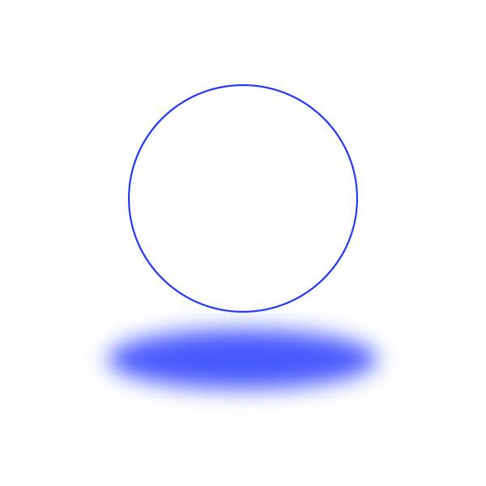

◊
Swift flap. Eager and hungry, dripping with forward focus,
you stitched yourself along the bridge
to reach, to stand not upon but above, the peak and its shimmer,
wild wonderer, risking a lullaby,
and stayed there, hiding just to peer into the waters, the original ultramarine
where spectral, sponge-tinged turtles
were rising from the blue
There the taut static of nature at its lowest,
humming, veering frequencies,
baseless declarations!
A great gasp of your forearms,
a laugh, at you, but nice
absorbing the liminal, moving the pause.
Steps forward- a train- sleeping so fast.
A puzzling finesse,
How could you help falling out of yourself
on such a lust for the colour of glass----
you, involuntary normals, imagined concrete,
a burning light, wax refuses to budge
in the face of the overeager, the endearing greed
of wanting the moon in the day and the sun in the night
◊